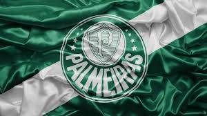

Modelos de carterinha

O Palmeiras é um dos clubes de futebol mais tradicionais e bem-sucedidos do Brasil. Sua história começa em 26 de agosto de 1914, quando um grupo de imigrantes italianos se reuniu na cidade de São Paulo para fundar um clube de futebol.
Inicialmente, o clube era conhecido como Palestra Italia, em homenagem à Itália, país de origem dos fundadores. Nos primeiros anos, o Palestra Italia se destacou no futebol amador de São Paulo, conquistando vários títulos regionais.
Em 1920, o clube decidiu profissionalizar sua equipe de futebol e passou a disputar as principais competições do Estado de São Paulo. Nos anos seguintes, o Palmeiras (como o clube passou a se chamar a partir de 1942) se consolidou como um dos maiores times do Brasil, conquistando vários títulos estaduais e nacionais.
Ao longo de sua história, o Palmeiras já conquistou 10 títulos do Campeonato Brasileiro, 4 Copas do Brasil, 1 Copa dos Campeões, 1 Copa Mercosul, 2 Copas Libertadores da América e 1 Mundial Interclubes, além de vários outros títulos estaduais e torneios amistosos.
Entre os grandes ídolos que já vestiram a camisa do Palmeiras, destacam-se nomes como Ademir da Guia, Dudu, Marcos, Edmundo, Alex, entre outros.
Em 2020, o Palmeiras conquistou a Copa Libertadores da América pela segunda vez em sua história, ao vencer o Santos na final da competição. Essa conquista marcou mais um capítulo na história de sucesso do clube e deixou sua torcida orgulhosa.
Últimas noticías
Danilo mexeu na equipe no intervalo, e o Corinthians melhorou com a entrada de Giuliano no lugar de Romero. A equipe ficou menos vulnerável defensivamente, retendo mais a bola, e o Palmeiras também diminuiu o ímpeto. Mesmo assim, aos 20 minutos, os donos da casa quase ampliaram, em cabeceio no travessão de Rafael Navarro, que entrou no lugar de Rony.
Com a vantagem, o técnico Abel Ferreira foi rodando a equipe e colocando jovens em campo, casos de Gustavo Garcia, Richard Ríos, Jhon Jhon e Giovani. Aos 29, o Timão diminuiu em lance confuso. Piquerez tentou cortar escanteio mal batido por Róger Guedes e mandou a bola para dentro da própria meta, encobrindo Weverton. A partir daí, os visitantes tentaram se lançar ao ataque e estiveram perto do empate em chance desperdiçada por Paulinho, aos 38. No fim, porém, deu Verdão mais uma vez no Dérbi!
Títulos e taças:
O Palmeiras é um clube brasileiro de futebol com uma história muito rica e vitoriosa. Aqui está uma lista dos principais títulos conquistados pelo Palmeiras:
1 Copa Rio Internacional: 1951
1 Copa Libertadores da América: 1999
1 Copa Mercosul: 1998
10 Campeonatos Brasileiros: 1960, 1967, 1967 (Torneio Roberto Gomes Pedrosa), 1969, 1972, 1973, 1993, 1994, 2016 e 2018
4 Copas do Brasil: 1998, 2012, 2015 e 2020
1 Supercopa do Brasil: 2022
1 Recopa Sul-Americana: 2022
1 Copa Sul-Americana: 2022
23 Campeonatos Paulistas: 1920, 1926, 1927, 1932, 1933, 1934, 1936, 1940, 1942, 1944, 1947, 1950, 1959, 1963, 1966, 1972, 1974, 1976, 1993, 1994, 1996, 2008 e 2020